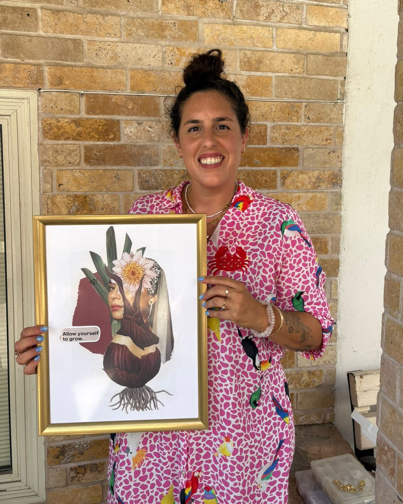

נעים להכיר, אני נוית
אני יוצרת קולאז׳ים, מעצבת ומנחת סדנאות יצירה, ומאמינה שלפעמים דווקא מתוך החלקים הקטנים והלא צפויים נולדים הסיפורים היפים ביותר.
בעלת תואר בעיצוב תקשורת חזותית מהמכון הטכנולוגי HIT בחולון, אני מביאה לעולם הקולאז׳ים שלי את האהבה לדימויים, לצבע, לחומר ולחיבורים מפתיעים בין עולמות. אני אוספת פיסות של מציאות — תמונות ממגזינים, מילים, טקסטורות וזיכרונות — ומרכיבה מהן סיפורים חזותיים חדשים. כל יצירה היא עולם בפני עצמו, חד־פעמי, קצת נוסטלגי, קצת חלומי, ותמיד פתוח לפרשנות אישית.


הסיפור שלי
בשבילי, קולאז׳ הוא הרבה יותר מחיבור של ניירות. הוא דרך להתבונן מחדש במוכר, למצוא יופי בפרטים הקטנים ולתת מקום לדמיון, לאינטואיציה ולחופש ליצור.
מתוך האהבה הזאת נולדו גם סדנאות הקולאז׳ שלי — מרחבים שמזמינים אנשים לעצור לרגע את שגרת היום, להניח בצד את המסכים ולהתחבר מחדש ליצירתיות שלהם. אין צורך בניסיון קודם או בידע אמנותי, רק בסקרנות וברצון להתנסות, לשחק ולגלות מה יכול להיווצר.
בסדנאות אני יוצרת הזדמנות למפגש — עם עצמנו, עם אחרים ועם האפשרויות האינסופיות שמסתתרות בחומר. אני אוהבת במיוחד מפגשים בין הורים וילדים, שבהם נוצרת יצירה משותפת והזדמנות להיות יחד בדרך קצת אחרת.
בין אם תבחרו ביצירת קולאז׳ מקורי שיכניס הביתה סיפור, צבע ונקודת מבט חדשה, ובין אם תגיעו לסדנה כדי ליצור בעצמכם — אני מזמינה אתכם להיכנס לעולם שבו אין דרך אחת נכונה, אין צורך בשלמות, ויש מקום להפתעות.
ליצור אחרת. לראות אחרת. להתחבר דרך יצירה.
שמחה שאתם כאן.
היום: סדנאות קולאז׳ בבאר טוביה, ואצלכם – עד כשעתיים נסיעה.
רגעים מהשולחן